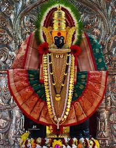

Mahalaxmi Ambabai Mandir

Mahalakshmi Temple (also known as Ambabai Mandir) is an important Hindu temple dedicated to Goddess Lakshmi,
who resides here as Supreme Mother Mahalakshmi and is worshipped by locals as Ambabai. Goddess Mahalakshmi is
considered to be Devi Lakshmi the consort of Lord Vishnu by Vaishnavites and to be Devi Parvati the consort of
Lord Shiva by Shaivas and Shaktas. It is customary among Hindus to visit Tirumala Venkateswara Temple,
Kolhapur Mahalakshmi Temple and Padmavathi Temple as a yatra (pilgrimage).
It is believed that visiting these temples as a pilgrimage helps achieve moksha (salvation)
Video Link
Directions to the Shree Mahalaxmi Mandir